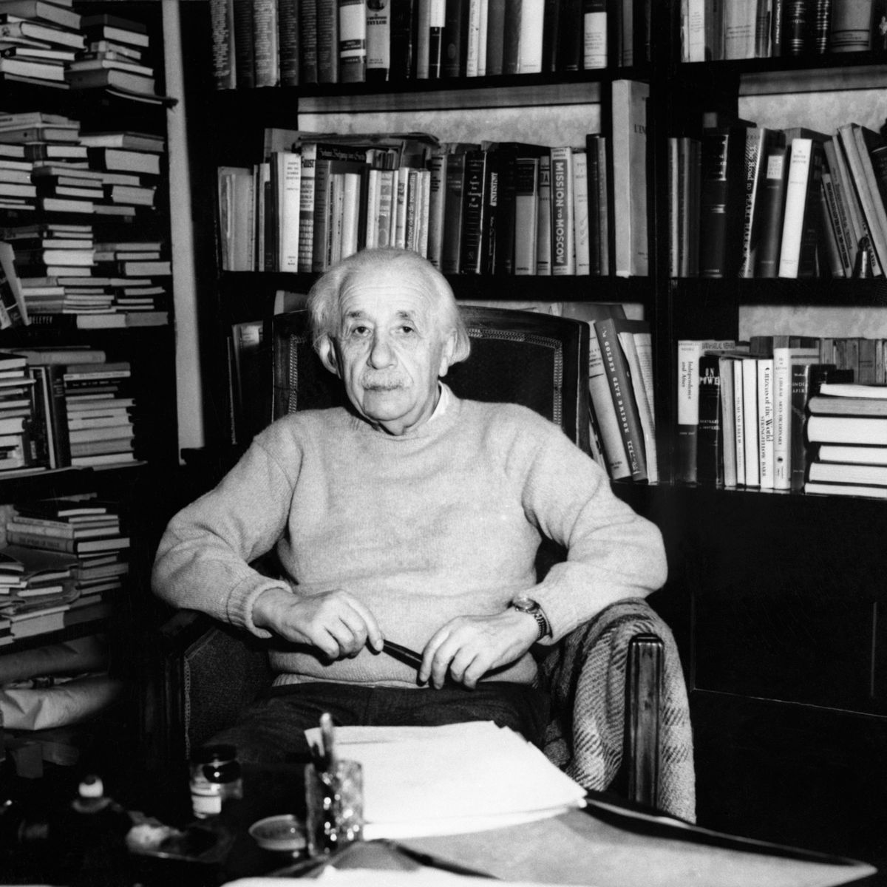
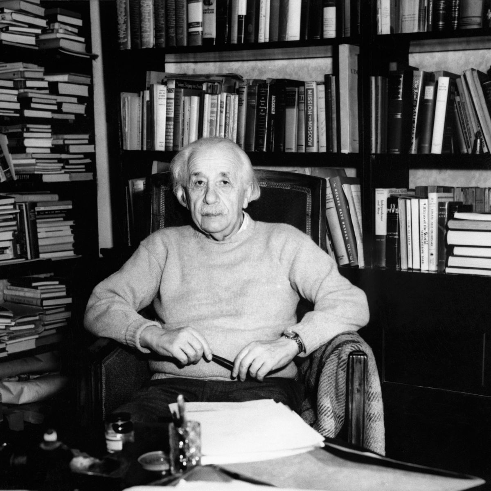

About
Albert Einstein, born on March 14, 1879, in Ulm, Germany, was a theoretical physicist who reshaped the understanding of the universe with his groundbreaking contributions to the field of physics. Best known for his theory of relativity, Einstein's work laid the foundation for modern physics. Einstein's early life was marked by intellectual curiosity and an independent spirit. He struggled in a traditional school environment but excelled in mathematics and physics. In 1905, often referred to as his "miracle year," he published four revolutionary papers, including his special theory of relativity and the famous equation E=mc^2, which demonstrated the equivalence of energy and mass. In 1915, Einstein presented his general theory of relativity, explaining gravity as the curvature of spacetime caused by mass and energy. This theory predicted phenomena like gravitational time dilation, later confirmed through experiments. Einstein's fame grew globally, earning him the Nobel Prize in Physics in 1921 for his explanation of the photoelectric effect. Despite his contributions, Einstein faced challenges during the rise of the Nazi regime in Germany due to his Jewish heritage. He emigrated to the United States, where he accepted a position at the Institute for Advanced Study in Princeton.
Hobbies
Music: Einstein had a deep appreciation for music, particularly the violin. He started playing the violin at a young age and continued to enjoy music throughout his life. He often turned to music as a source of inspiration and relaxation.
Sailing: Einstein found solace and enjoyment in sailing. He owned a sailboat and would spend time on the water, finding it to be a peaceful and contemplative activity.
Reading and Philosophy: Einstein was well-read in various subjects, including philosophy. He had a particular interest in the works of philosophers like Immanuel Kant and Baruch Spinoza. His philosophical reflections influenced his views on science and the nature of reality.
Writing: Beyond his scientific papers, Einstein wrote extensively on a range of topics, including essays, letters, and reflections on science, philosophy, and social issues. His writings often revealed his thoughts on pacifism, education, and human rights.
Political Activism: Einstein was an outspoken advocate for civil rights, pacifism, and social justice. He used his influence to address issues such as racism and nuclear disarmament, reflecting his strong commitment to ethical and humanitarian causes.
Publications
Photoelectric Effect (1905)
This paper, for which Einstein received the Nobel Prize in Physics in 1921, explained the photoelectric effect by proposing that light consists of discrete packets of energy called quanta or photons.
Learn moreGeneral Theory of Relativity (1915-1916)
Einstein published a series of papers presenting his general theory of relativity, which fundamentally altered our understanding of gravity. These papers developed the idea that gravity is a result of the curvature of spacetime caused by mass and energy.
Learn moreThe World as I See It (1934)
This collection of essays presents Einstein's thoughts on a wide range of topics, including science, philosophy, politics, and religion. It offers insights into his personal views and beliefs.
Learn moreOut of My Later Years (1950)
This compilation includes a selection of Einstein's essays, articles, and speeches covering a diverse range of subjects, including science, education, and politics.
Learn moreGallery

 


Blog
According to autism expert Simon Baron-Cohen from Cambridge University, Einstein exhibited traits of Aspergers Syndrome since his early years. Baron-Cohen points to studies indicating a disproportionately high number of individuals excelling in understanding intricate systems, such as physicists, mathematicians, and engineers, being on the autism spectrum. He suggests that specific societal niches allow these individuals to thrive based on academic prowess rather than social skills. Creating environments that accommodate their needs can benefit both the individual and businesses at large.
The Diagnostic and Statistical Manual of Mental Disorders outlines 16 criteria for diagnosing autism spectrum disorders. Einstein's delayed speech development aligns with one of these criteria. As an adult, he adhered to a rigid set of expectations, even imposing them on his wife. This characteristic mirrors another criterion: an inflexible adherence to routine or ritualized patterns.
However, some researchers and scholars have retrospectively speculated about the possibility of Einstein having traits associated with Asperger's. Simon Baron-Cohen, a well-known autism researcher, has suggested that Einstein may have exhibited characteristics consistent with Asperger's Syndrome, based on historical accounts of his behavior.
Einstein was known for his intense focus on his work, a certain degree of social aloofness, and adherence to personal routines. He had a tendency to be absorbed in his thoughts and was not always comfortable in social situations. These traits, among others, have led some experts to consider the possibility that Einstein might have been on the autism spectrum.
It's important to note that such retrospective diagnoses are speculative and should be approached with caution. Asperger's Syndrome and autism are complex neurodevelopmental conditions, and attributing them to historical figures without direct evidence can be challenging.